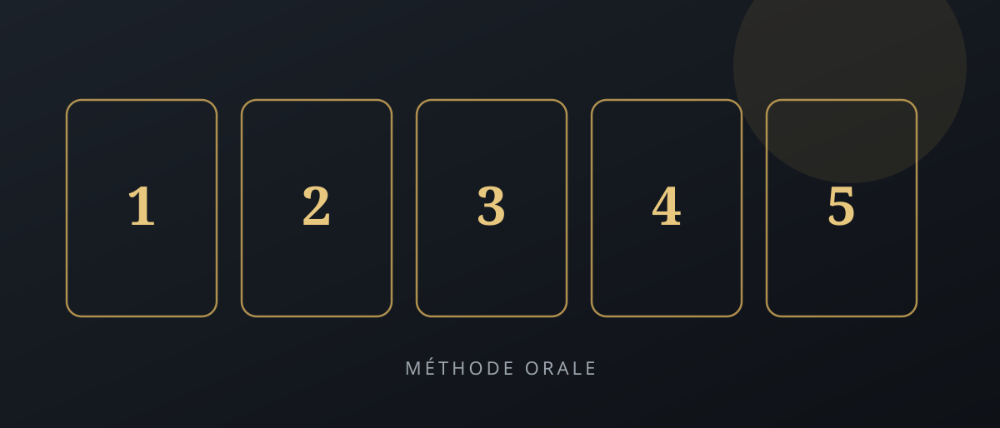

Réussir l'oral de la Licence / Master d'Excellence à Meknès : la méthode en 5 étapes
L'oral décide souvent du classement. Voici une méthode concrète — matières, timing, posture — pour aborder le concours avec méthode, puis rejoindre la semaine gratuite NC Consulting (début des cours : jeudi 23 juillet 2026).

Les concours d'accès aux Licences d'Excellence et Masters d'Excellence au Maroc ne se gagnent pas seulement sur le volume de révision. L'oral mesure votre clarté, votre maîtrise des bases et votre capacité à tenir sous pression — surtout à Meknès et dans les filières économie / gestion / finance.
Cette méthode en cinq étapes est conçue pour des candidats Bac+2 / Licence qui veulent un plan actionnable, pas une liste de conseils flous. Elle s'aligne sur ce que nous travaillons dans la semaine gratuite de préparation : comptabilité, analyse financière, économie, management et anglais.
Étape 1 — Clarifier le format de votre concours
Avant de « tout réviser », notez précisément : écrit + oral ou oral seul ? Durée de l'oral ? Coefficient ? Packs de spécialité (Finance, Management, Marketing…) ? Sans ce cadre, vous gaspillez du temps sur des chapitres hors cible.
Faites une fiche d'une page : matières attendues, types de questions (motivation, culture économique, exercice court), et date du passage. C'est votre tableau de bord.
Étape 2 — Consolider les bases (pas tout le manuel)
Sur les matières fréquentes — comptabilité, analyse financière, économie, management, anglais — visez la maîtrise des notions pivots et des exercices types, pas la lecture linéaire de 400 pages.
- Comptabilité : écritures de base, bilan / compte de résultat, lecture simple d'indicateurs.
- Économie : macro/micro essentielles, vocabulaire clair, un exemple marocain ou international prêt.
- Management : organisation, décisions, leadership — avec un cas court préparé.
- Anglais : se présenter, motiver son choix de filière, répondre à 8–10 questions courantes.
Un plan intensif d'une semaine bien tenu bat souvent trois semaines de révision dispersée.
Étape 3 — Construire votre « fil rouge » de présentation
Le jury veut comprendre qui vous êtes en 60–90 secondes : parcours, objectif (Licence / Master d'Excellence), cohérence du projet. Préparez une structure fixe :
- Qui je suis (formation / expérience courte)
- Pourquoi cette filière d'excellence
- Ce que j'apporte (rigueur, curiosité, projet)
- Ce que je vise après (orientation claire, même provisoire)
Entraînez-vous à voix haute jusqu'à ce que ce fil tienne sans notes. Le stress baisse quand la structure est automatisée.
Étape 4 — Enchaîner des oraux blancs chronométrés
Deux à quatre simulations suffisent souvent pour changer le niveau : chrono, questions pièges, feedback sur la voix et la posture. Enregistrez-vous au téléphone si vous n'avez pas d'interlocuteur.
Travaillez surtout : démarrer sans bégayer, reformuler une question mal comprise, conclure sans « voilà… ». Ce sont les moments où les candidats perdent des points sans s'en rendre compte.
Étape 5 — Gérer la veille et le jour J
La veille : révision légère des fiches, sommeil, pas de nouveau chapitre. Le jour J : arrivez en avance, respirez, ouvrez par votre fil rouge. Si une question bloque, dites ce que vous savez avec méthode plutôt que d'improviser un discours vide.
Le stress n'est pas l'ennemi : l'absence de méthode l'est. Plus vous avez répété le cadre, plus le stress devient de l'énergie utile.
Semaine gratuite NC Consulting — inscription ouverte
Pour accélérer cette préparation, NC Consulting propose une semaine gratuite de préparation aux Licences d'Excellence : à distance, 21h–22h, thèmes comptabilité / finance / économie / management / anglais. Début des cours : jeudi 23 juillet 2026 — places limitées.
Inscrivez-vous via le formulaire du site pour recevoir le lien de connexion, ou consultez le détail du programme sur l'annonce officielle.
Mots du jury : ce que cherchent les commissions d'excellence
Que vous prépariez un concours Licence d'Excellence ou un Master d'Excellence au Maroc, le jury écoute trois signaux : clarté du projet, maîtrise des bases (comptabilité, économie, management, anglais), et tenue sous pression. Un candidat qui « sait tout » mais bégaye sans fil rouge perd face à un candidat structuré.
Travaillez le vocabulaire de votre filière (finance, gestion, marketing…) pour l'oral du concours d'excellence : définitions courtes + un exemple marocain ou international. C'est ce qui transforme une révision scolaire en performance d'admission.
Un plan intensif d'une semaine bien tenu bat souvent trois semaines de révision dispersée.
Checklist J-14 avant l'oral
- Fiche d'une page : format du concours, matières, date.
- Pitch 60–90 secondes chronométré (3 passages minimum).
- 8–10 questions types + 1 mini-cas économie / management.
- Anglais : se présenter + motiver le choix de filière.
- Sommeil et révision légère la veille — pas de nouveau chapitre.
Pour le fond disciplinaire, enchaînez avec le guide révision d'été comptabilité économie management. Pour s'entraîner aux questions, voir la simulation d'oral concours d'excellence.
FAQ — Concours Licence / Master d'Excellence
Qu'est-ce que la Licence d'Excellence / Master d'Excellence au Maroc ?
Ce sont des filières sélectives accessibles sur concours (écrit et/ou oral). Elles ciblent des profils motivés en économie, gestion, finance, management ou domaines proches, avec un niveau d'exigence plus élevé qu'une inscription classique.
Comment se préparer à l'oral d'un concours d'excellence ?
Structurez votre révision par matières, entraînez-vous à l'oral chronométré, préparez une présentation claire de votre parcours, et travaillez les questions typiques (motivation, culture générale économique, cas simples). La méthode en 5 étapes ci-dessus détaille le déroulé.
Quelles matières sont évaluées (comptabilité, économie, management, anglais) ?
Selon le concours et le pack, on retrouve souvent la comptabilité / analyse financière, l'économie, le management, et l'anglais. NC Consulting couvre ces thèmes dans la semaine gratuite de préparation.
Combien de temps avant le concours faut-il commencer à réviser ?
Idéalement plusieurs semaines pour consolider les bases. Même à J-7 / J-14, un plan intensif ciblé (méthodes + exercices types + oraux blancs) améliore nettement la performance. Ne partez pas sans plan.
Le coaching de préparation à distance est-il aussi efficace qu'en présentiel ?
Oui, lorsque le suivi est structuré : horaires fixes, supports clairs, exercices et feedback. La semaine gratuite NC Consulting se déroule à distance (21h–22h) avec la même exigence pédagogique qu'en présentiel.
Comment gérer le stress avant un oral ?
Réduisez l'incertitude : entraînez-vous à voix haute, chronométrez, préparez une structure d'intro/conclusion, dormez correctement la veille. Le stress baisse quand la méthode est répétée, pas quand on « révise encore tout » la nuit d'avant.
Quelles sont les erreurs fréquentes des candidats aux concours d'excellence ?
Réviser sans plan, négliger l'oral au profit de l'écrit, réciter sans structurer, ignorer l'anglais, et arriver sans exemples concrets tirés de son parcours. Les jurys sanctionnent surtout le flou et le manque de méthode.
Comment s'inscrire à la semaine gratuite de préparation NC Consulting ?
Remplissez le formulaire d'inscription en indiquant votre profil concours. Début des cours : jeudi 23 juillet 2026 — format à distance, 21h–22h, places limitées. Consultez aussi l'annonce Semaine gratuite pour le détail du programme.